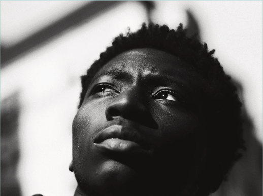

GraceBook is not your everyday kind of Social Media Website.
In a world, where everything is controlled, we have made it our Goal to establish a safe zone from the "black and brown" man, woman and kids to socialize, without being put in visage book jail or real jail.
If victims of all sort have their platforms to discuss the real, without the ones that hurt them being there, why should the most hurt people on this Earth not have it so or better...
MUCH BETTER
Be the first to sign up when we are open for Business.
Enter your Email Address here:
